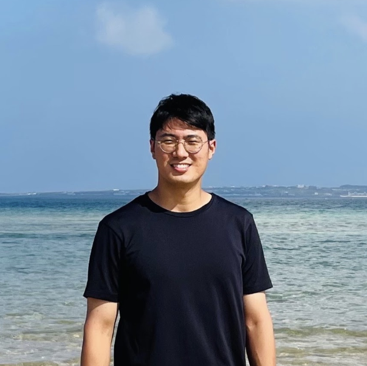

SONG YOUNGHWA
KO
EN
JA
RU
Song
Younghwa

01
02
03
04
2025.02
2025.11
2025.12
2019
KCI ↗
2020
KCI ↗
2021
KCI ↗
2022
KCI ↗
2023
KCI ↗
2026.07
2025.02
↗
2025.08
2025.09
2025.10
2025.11
↗
2025.12
↗
2025.12.19
↗
2026.06.26
↗
2026.07
2026.08.22
2026.09.19
Korea-Town DB
↗
HisNetVu
·
↗
↗
·
↗
Email: yhsong002@gmail.com